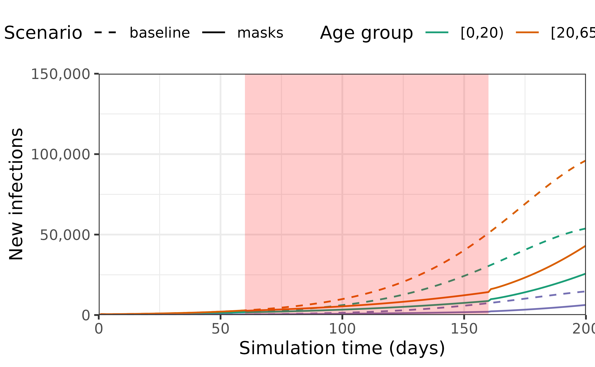

Modelling interventions that change infection parameters
Source:vignettes/modelling_rate_interventions.Rmd
modelling_rate_interventions.RmdNew to epidemics, or to modelling interventions? It may help to read the “Get started” first! See the “Modelling a non-pharmaceutical intervention” vignettes for a guide to modelling interventions on social contacts instead.
Prepare population and initial conditions
We prepare population and contact data from the U.K., with epidemiological compartments matching the default epidemic model (SEIR-V).
We assume that one in every million people has been infected and is infectious, translating to about 67 total infections for a U.K. population of 67 million.
The code for these steps is similar to that in the “Getting started vignette” and is hidden here, although it can be expanded for reference.
Code
# load contact and population data from socialmixr::polymod
polymod <- socialmixr::polymod
contact_data <- socialmixr::contact_matrix(
polymod,
countries = "United Kingdom",
age.limits = c(0, 20, 65),
symmetric = TRUE
)
# prepare contact matrix
contact_matrix <- t(contact_data$matrix)
# prepare the demography vector
demography_vector <- contact_data$demography$population
names(demography_vector) <- rownames(contact_matrix)Code
# initial conditions
initial_i <- 1e-4
initial_conditions <- c(
S = 1 - initial_i, E = 0, I = initial_i, R = 0, V = 0
)
# build for all age groups
initial_conditions <- rbind(
initial_conditions,
initial_conditions,
initial_conditions
)
# assign rownames for clarity
rownames(initial_conditions) <- rownames(contact_matrix)Code
uk_population <- population(
name = "UK",
contact_matrix = contact_matrix,
demography_vector = demography_vector,
initial_conditions = initial_conditions
)Modelling an intervention on the transmission rate
We model an intervention on the transmission rate \(\beta\) that reduces it by 10%. This could represent interventions such as requiring people to wear masks that reduce transmission.
Code
# prepare an intervention that models mask mandates for ~3 months (100 days)
mask_mandate <- intervention(
name = "mask mandate",
type = "rate",
time_begin = 60,
time_end = 60 + 100,
reduction = 0.1
)
# examine the intervention object
mask_mandate
#>
#> Intervention name:
#>
#> Begins at:
#> [,1]
#> [1,] 60
#>
#> Ends at:
#> [,1]
#> [1,] 160
#>
#> Reduction:
#> Interv. 1
#> 0.1
# check the object
is_intervention(mask_mandate)
#> [1] TRUE
is_contacts_intervention(mask_mandate)
#> [1] FALSE
is_rate_intervention(mask_mandate)
#> [1] TRUEWe first run a baseline scenario — no interventions are implemented to slow the spread of the epidemic — and visualise the outcomes in terms of daily new infections.
We simulate an epidemic using model_default(), calling the default model outlined in the “Get started vignette”.
To examine the effect of a mask mandate, we simulate the epidemic for 200 days as we expect the intervention to spread disease incidence out over a longer period.
Code
# no intervention baseline scenario
data <- model_default(
population = uk_population,
time_end = 200, increment = 1.0
)
# with a mask mandate
data_masks <- model_default(
population = uk_population,
intervention = list(transmission_rate = mask_mandate),
time_end = 200, increment = 1.0
)Code
# get new infections in each scenario
data <- new_infections(data, by_group = TRUE)
data_masks <- new_infections(data_masks, by_group = TRUE)
# assign a scenario name to each scenario
data$scenario <- "baseline"
data_masks$scenario <- "masks"
# bind data together
data_combined <- bind_rows(data, data_masks)We plot the data to examine the effect that implementing a mask mandate has on the daily number of new infections.
Code
ggplot(data_combined) +
geom_line(
aes(time, new_infections, col = demography_group, linetype = scenario)
) +
coord_cartesian(
expand = FALSE
) +
annotate(
geom = "rect",
xmin = mask_mandate[["time_begin"]],
xmax = mask_mandate[["time_end"]],
ymin = 0, ymax = 150e3,
fill = alpha("red", alpha = 0.2),
lty = "dashed"
) +
scale_y_continuous(
labels = scales::comma
) +
scale_linetype_manual(
name = "Scenario",
values = c(
baseline = "dashed",
masks = "solid"
)
) +
scale_colour_brewer(
palette = "Dark2",
name = "Age group"
) +
expand_limits(
y = c(0, 100e3)
) +
coord_cartesian(
expand = FALSE
) +
theme_bw() +
theme(
legend.position = "top"
) +
labs(
x = "Simulation time (days)",
linetype = "Compartment",
y = "New infections"
)